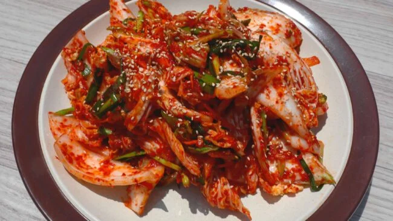

Quick, fresh kimchi

Description
Most important Korean side dish. Best if home made and not mass produced overseas, at least if you're a Kimchi connoisseur like me. Again a queen Maangchi recipe from here
Ingredients
- 1 pound napa cabbage (baechu) leaves, core removed
- 1 tablespoon kosher salt
- 3 tablespoons fermented salty anchovies (myeolchi-jeot) with their liquid
- 1 cup water
- 2 teaspoons glutinous rice flour (or rice flour, or all purpose flour)
- 1½ teaspoons sugar
- ⅓ cup Korean hot pepper flakes (gochugaru)
- 1 tablespoon fish sauce
- 3 garlic cloves
- ½ teaspoon ginger
- ¼ cup onion
- 2 green onions, sliced diagonally
- ½ cup Asian chives (buchu), cut into 1 inch long
- ¼ cup carrot matchsticks
- 1 tablespoon toasted sesame seeds
Steps
- Cut cabbage leaves lengthwise once or twice into strips about 1 inch wide. Cut each strip diagonally once or twice and put them into a large bowl.
- Add ½ cup water and sprinkle the salt over top. Toss the cabbage well with your hands to spread the salt evenly on the leaves.
- Salt for 30 minutes, tossing every 10 minutes.
While it’s salting, make kimchi paste:
- In a small saucepan add fermented salty anchovies, ½ cup water, and glutinous rice flour. Stir the mixture with a wooden spoon.
- Heat it over medium heat, stirring occasionally for about 4 to 5 minutes until all the fish is melted. Strain the mixture to a large bowl. Discard the fish bones in the strainer. Let the mixture cool down.
- Add hot pepper flakes and sugar. Mix it well with a wooden spoon.
- Add garlic, ginger, and onion to a food processor and grind it all for 1 minute until smooth. Add it to the hot pepper mixture and stir well.
- Add green onion, chives, and carrot and stir well.
Make kimchi:
- Rinse the cabbage in cold water, changing the water a couple of times until the cabbage is very clean.
- Drain the cabbage well and add it to the kimchi paste. Wear your kitchen gloves and mix everything well.
- Sprinkle the sesame seeds, and transfer to a plate and serve right away as a side dish for rice, kalguksu (knife-cut noodle soup), or porridge.